<ion-header [translucent]="true">
  <ion-toolbar>
    
  </ion-toolbar>
</ion-header>

<ion-content [fullscreen]="true">
  <div class="tt-config">
    <h4>Configurações</h4>
  </div>

  <!-- Rota para Perfil -->
  <ion-item [routerLink]="['/nav/perfil']" button>
    <ion-label class="meu-label">
      <h2 class="tt-alterar">Alterar Dados da Conta</h2>
    </ion-label>
    <ion-icon name="chevron-forward-outline"></ion-icon>
  </ion-item>

  <!-- Toggle modo noturno -->
  <ion-item>
    <ion-label class="meu-label">
      <ion-toggle
        mode="ios"
        [checked]="darkModeAtivo"
        (ionChange)="toggleDarkMode($event)"
        >Modo Noturno</ion-toggle
      >
    </ion-label>
  </ion-item>

  <!-- Botão sair -->
  <ion-item lines="none" detail="false">
    <button class="sair" (click)="sair()">
      <h2>Sair</h2>
      <ion-icon name="exit-outline"></ion-icon>
    </button>
  </ion-item>
</ion-content>
